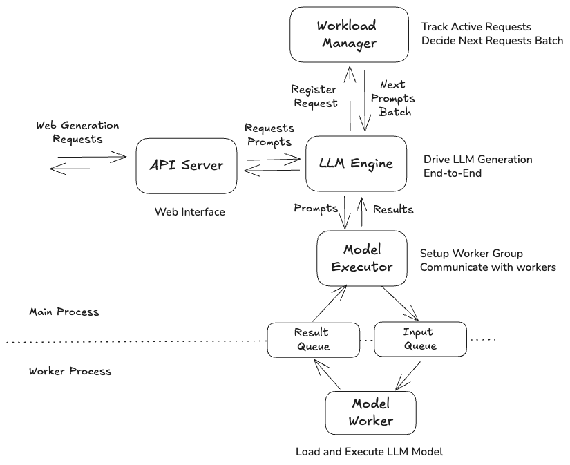
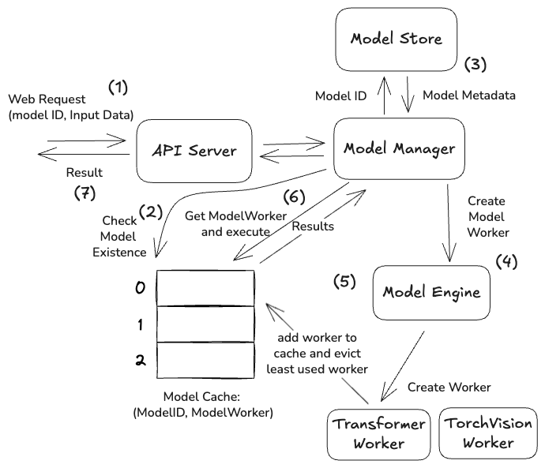

03. Model-Serving System Design: A Deep Dive¶
This chapter connects earlier concepts about model architectures and inference to real-world production systems for serving LLMs. Instead of focusing on specific tools, it emphasizes understanding core principles behind model serving to better evaluate different frameworks.
It introduces two simplified systems:
- Single-model serving system
- Multi-model serving system
These examples demonstrate key components like batching, streaming, routing, isolation, and resource management, helping explain how real-world systems work.
The chapter progresses from building a single-model system to extending it for multiple models, and compares two architectural approaches—one optimized for cost and another for latency and scalability.
Build on Online LLM Serving Service from Scratch¶
Modern Serving LLM Frameworks like VLLM and Triton abstracy away much of the complexity involved in hosting LLMs. To reason about performance, cost and scalability it is important to understand the core mechanics of a serving system before relying on a framework. In this section we will build a simplified online single-model LLM serving service.
Service Architecture¶

This Architecture has 6 components
- API Server - Deals with http endpoints and request/reponse Handling
- LLM Engine - High level orchestrator, Operates inference end to end
- Workload Manager - Handles request queing and batch management
- Model Executor - Manages processes and coordinates model-worker execution
- Model Worker - Executes Model inference execution in its own process
- Model Manager - Loads and caches the model
To handle concurrent requests with support for batching and streaming, the system introduces a workload manager that tracks the state of each prompt and selects which prompts should be processed next. This component plays a key role in optimizing throughput by enabling different batching strategies.
Model workers are responsible for loading, hosting, and executing the model in isolated processes. The model executor, on the other hand, orchestrates these workers—it initializes them, organizes them into groups, manages and coordinates inference by dispatching tasks and collecting results.
Implement Single Generation Request Handling¶
LLM Engine — Core Logic¶
At its core, the LLMEngine continuously pulls incoming requests, groups them into batches, runs model inference, and routes outputs back to the correct clients.
The main logic lives in a background loop that:
- Fetches the next batch of active requests from the workload manager
- Executes a forward pass on the model via the executor
- Routes results back:
- If a sequence is complete → mark finished and signal the client
- If not → stream the next token and update its state
This loop runs independently of the API layer, allowing requests to be queued and processed asynchronously. Streaming is handled by pushing tokens into per-request queues, which are consumed by async generators on the API side.
Overall, the engine decouples request intake, batching, execution, and response delivery, enabling efficient utilization of the model while supporting both batched and streaming inference.
⚙️ Model Executor — Core Logic¶
The ModelExecutor acts as a bridge between the orchestration layer and the actual model execution by offloading inference to a separate process.
Its core logic is simple:
- Send work to a worker process via a task queue
- Wait for results via a result queue
- Return outputs back to the caller
When a batch arrives, the executor:
- Pushes the batch into a multiprocessing queue (
task_queue) - The worker process picks it up, runs inference, and writes results to
result_queue - The executor blocks until results are available and returns them
For streaming workloads, it follows the same pattern but marks the request as streaming, allowing the worker to return partial (token-level) outputs instead of full completions.
This design cleanly isolates model execution in a separate process, enabling:
- Fault isolation (worker crashes don’t kill the main system)
- Better resource management (e.g., GPU usage)
- Parallelism beyond Python’s GIL
Overall, the executor abstracts away inter-process communication and presents a simple “send batch → get result” interface to the rest of the system.
Model Manager — Core Logic¶
The ModelManager is responsible for loading and providing access to the model and tokenizer used during inference.
Its core logic is straightforward:
- Ensure a local directory exists for storing model artifacts
- Load the model and tokenizer from a given model name
- Return both for use by the worker
Whenever a model is requested, it:
- Creates a cache directory (if not already present)
- Loads the model and tokenizer using the Hugging Face
transformerslibrary
This component abstracts model loading from the rest of the system, allowing the execution layer to remain focused purely on inference.
💡 In a more advanced setup, this layer could be extended to:
- Cache and reuse loaded models
- Support multiple models
- Handle versioning or device placement (CPU/GPU)
📊 Workload Manager — Core Logic¶
The WorkloadManager is responsible for queuing incoming requests and forming batches that can be efficiently processed by the model.
At a high level, it:
- Accepts incoming requests (both regular and streaming)
- Moves them into active batches up to a fixed batch size
- Tracks the state of each request throughout its lifecycle
When a request arrives:
- It is wrapped as a
Sequenceobject (containing prompt, output, and metadata) - Stored in a queue (
incoming_queueorincoming_streaming_queue) - Indexed in a
sequence_mapfor quick lookup
During execution:
- The engine repeatedly calls
get_next_batch() - The manager fills an active batch (up to
batch_size) from the queue - Returns currently active sequences for processing
As tokens are generated:
update_sequence_output()appends tokens, updates the prompt, and tracks progress- Sequences remain active until marked finished
When a request completes: - It is removed from active tracking - Eventually cleaned up from the system
This component enables dynamic batching by continuously mixing new and ongoing requests, maximizing throughput while keeping per-request state isolated.
Multi Model serving Framework¶
Model Engine — Core Logic (Multi-Model Routing)¶
The ModelEngine introduces multi-model support by acting as a registry and factory for model-specific workers.
Its core responsibility is simple:
Given a
model_id, return the correct worker that knows how to run that model.
When a request comes in:
- The engine checks if a worker already exists for the given
model_id - If not, it creates one based on the model’s framework
- Stores and reuses the worker for future requests
Worker creation is framework-driven:
- "transformers" → TransformerWorker
- "torchvision" → TorchVisionWorker
- "triton" → TritonWorker
This means each model can have a different execution backend, while the rest of the system interacts with a unified interface (ModelWorker).

💡 Key idea: lazy initialization — models are only loaded when first requested, avoiding unnecessary resource usage.
When a model is no longer needed:
delete_worker()removes it from the registry- Enables lifecycle control (useful for memory/GPU management)
Overall, this component decouples model selection from execution, making the system extensible to multiple models and frameworks without changing the core inference pipeline.
Model Manager — Core Logic (Multi-Model + LRU Cache)¶
The ModelManager handles loading, caching, and eviction of multiple models, ensuring efficient use of limited resources (e.g., memory/GPU).
At its core, it implements an LRU (Least Recently Used) cache over model workers:
-
When a request for a
model_idcomes in: -
If already loaded → return it and mark as recently used
-
If not → fetch metadata and load it via the
ModelEngine -
Before loading a new model:
-
If cache limit (
max_models) is reached - Evict the least recently used model
-
Remove its worker via the engine
-
Create and cache the new worker:
-
Delegates actual worker creation to
ModelEngine - Stores it in an ordered cache for reuse
This ensures:
- Frequently used models stay in memory
- Rarely used models are automatically unloaded
- The system never exceeds its model capacity
Key idea: decoupled lifecycle management
ModelEngine→ knows how to create/delete workersModelManager→ decides when to load/unload models
Overall, this layer enables scalable multi-model serving with controlled resource usage.
API Layer — Core Logic (Multi-Model Inference Entry Point)¶
The API layer exposes a simple interface for interacting with the multi-model system, acting as the entry point for all inference requests.
At its core, it does three things:
- Accept incoming requests with a
model_idand input data - Resolve the correct model via the
ModelManager - Delegate execution to the corresponding model worker
Prediction Flow¶
When a request hits /predict:
- Extract
model_idandinput_data - Ask the
ModelManagerfor the corresponding worker - This may load the model on demand (lazy loading)
- Or return a cached instance
- Call: ```python worker.predict(input_data)
Model Store — Core Logic (Model Registry)¶
The ModelStore acts as a central registry of available models, providing metadata required to load and serve them.
At its core, it:
- Loads model configurations from a JSON file at startup
- Stores them in an in-memory dictionary (
model_id → metadata) - Provides lookup and listing APIs for other components
How It Works¶
-
On initialization:
-
Reads a config file (
models.json) - Parses each entry into a structured
ModelMetadataobject -
Indexes models by
idfor fast access -
During inference:
-
get_model(model_id)→ returns metadata for a specific model list_models()→ returns all registered models
Key Idea¶
This layer separates model definition from model execution:
- It does not load or run models
- It only knows what models exist and their properties (framework, version, etc.)
💡 This makes the system flexible:
- Add/remove models by editing config (no code changes)
- Enables dynamic model discovery for the rest of the pipeline
Overall flow:
ModelStore → ModelManager → ModelEngine → Worker
Model Workers — Core Logic (Unified Inference Interface)¶
The ModelWorker layer provides a unified abstraction for running inference across different frameworks, exposing a single predict(input_data) interface regardless of how or where the model is executed.
At its core, each worker:
- Is initialized with model metadata
- Loads the model once during creation
- Handles preprocessing, inference, and postprocessing internally
The execution flow is consistent across all implementations:
- Load model and required utilities (e.g., tokenizer, transforms, client)
- Accept raw input data
- Convert input into the format expected by the model
- Run inference
- Return structured predictions
This abstraction allows the rest of the system to remain completely framework-agnostic. Whether the model is a local NLP model, a vision model, or served remotely via Triton, all interactions reduce to:
worker.predict(input) → result
By isolating framework-specific logic inside workers, the system becomes easily extensible—supporting new model types requires only adding a new worker implementation, without modifying the API, manager, or engine layers.